MizMap
A live moving-map viewer for single-player DCS World missions. You choose what's visible — MizMap doesn't enforce the mission's in-game F10 view options.
Requires DCS-gRPC rust-server installed in DCS. Open the viewer on the DCS PC, a second monitor, or any tablet on the same Wi-Fi.
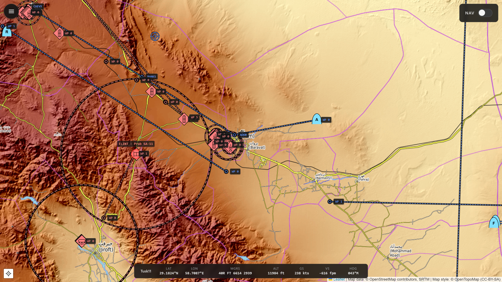
// Why
MizMap is built for free flight, self-training, and mission designers testing their own work. In a campaign that deliberately limits the map, you're working around the designer's intent — your call. And it's not a multiplayer tool: ethically off-limits, and technically blocked by the security flags any sane server has set.
DCS's in-game F10 map enforces whatever visibility options the mission designer baked in. MizMap doesn't. It reads the mission state directly from DCS-gRPC and renders it on a real-world map — topographic, street, or satellite — and you toggle the layers: coalitions, unit categories, threat rings, flight plans, airfields, navaids, F10 marks, trails — all client-side, all your call.
// Features
Pick what's visible
The filter panel is the whole point. Toggle chips for coalitions (Blue, Red, Neutral) and unit categories (Plane, Helo, Ground, Ship), then a stack of per-layer switches — routes, bullseyes, airfields, navaids, F10 marks, the ruler, threat rings, movement vectors, and motion trails — in collapsible sections, with the basemap picker and fog lens tucked alongside. A top bar carries the version, live gRPC/WebSocket status dots, and the Settings gear. Every choice rides the URL hash, so a view is bookmarkable and survives reloads.
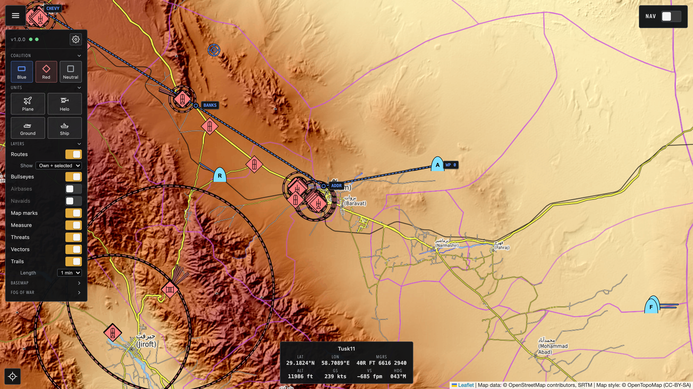
MIL-STD-2525C symbology
Proper military symbology via milsymbol.js, with per-DCS-type refinement
(a Hornet shows as a strike fighter, an SA-10 as the right SAM family). Hover any unit
for its callsign and DCS type; click to pin the tooltip in place. Coarse coalition
× category fallback for anything not yet in the type DB.
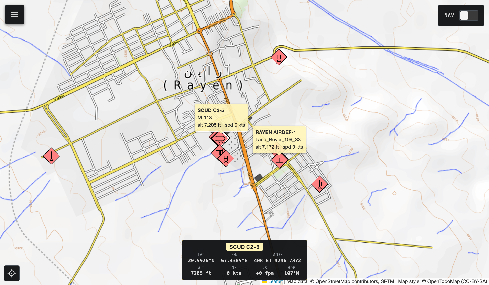
Telemetry HUD
Own-ship strip: lat/lon, MGRS, altitude, ground and vertical speed, magnetic heading. Auto-detects the player slot from DCS-gRPC; click any other unit to redirect the HUD.
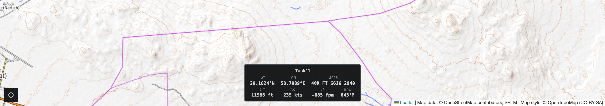
Click-to-measure BRA
Middle-click anywhere to start a live ruler that tracks your cursor; click again to lock it. Read magnetic bearing and slant range both ways — plus bearing from bullseye — alongside the target's MGRS, lat/long, and true DCS terrain elevation (straight from DCS, not a tile heightmap). Every row has one-tap copy, and the labels lie along the line so they never block the map.
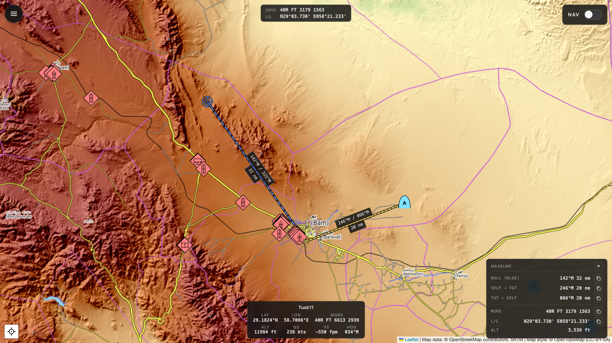
Flight plan + F10 marks
Mission waypoints rendered as polylines with always-on labels (name and ETA), pulled
from the live env.mission table. Every F10 mark you drop in DCS appears
on the map too — caption shown alongside — filtered by your own coalition and group.
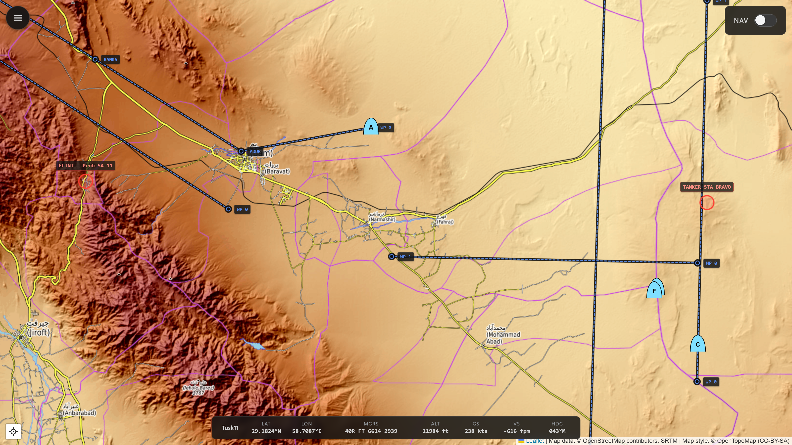
Airfields, runways & navaids
Every airfield and FARP drawn as a MIL-STD-2525C installation symbol with its name, each runway as a true-length, true-heading overlay that fades back as you zoom in to the real strip, and the theatre's navaids — NDB, VOR, DME, TACAN, VORTAC, ILS and more — as colour-coded glyphs with callsign, frequency, and channel on hover. Airfields and runways stream live from DCS-gRPC; navaids are read from the loaded terrain. One toggle each.
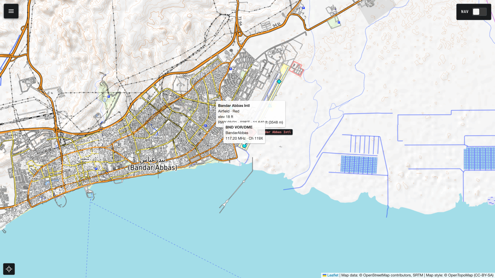
SAM & AAA threat rings
Published max engagement ranges for known SAM and AAA systems, drawn live around each
site as units move. Threat data lives in
mizmap/data/units.yaml
— community-extensible.
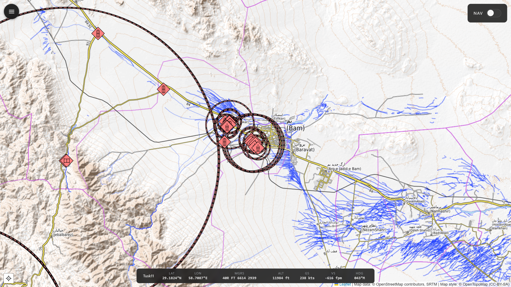
Navigation mode
One toggle and the map starts following you, with a top-center panel for the next waypoint: bearing (magnetic), distance, and ETA from current speed. Designed for a second monitor or tablet kneeboard.
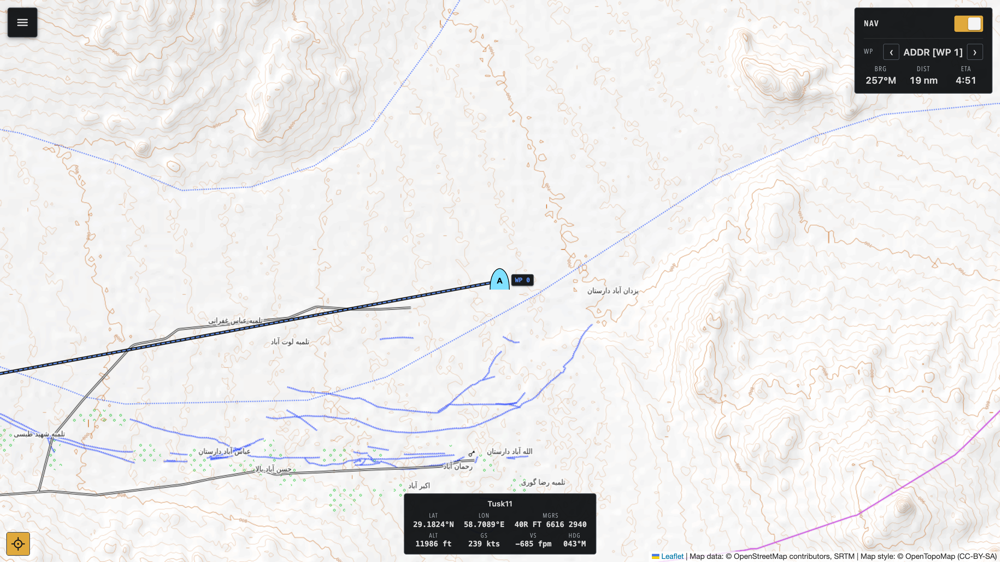
Fog-of-war preview
Built for mission designers. Flip on the fog-of-war lens and the map stops being god's-eye — it shows only what a chosen side would actually see in DCS's F10 view. MizMap unions each coalition's live sensor detection and hides everything its sensors haven't found, so you can confirm an ambush stays hidden or that your AWACS reveals the right picture. Detection confidence shapes the symbol: an unclassified contact drops to a bare affiliation frame, an unranged one gets a dashed uncertainty ring, and a lost contact lingers as a fading "last-known" ghost. Pick the viewpoint — own-ship, Blue, Red, or Neutral — to inspect either side. Off by default: a lens you opt into, never enforced.
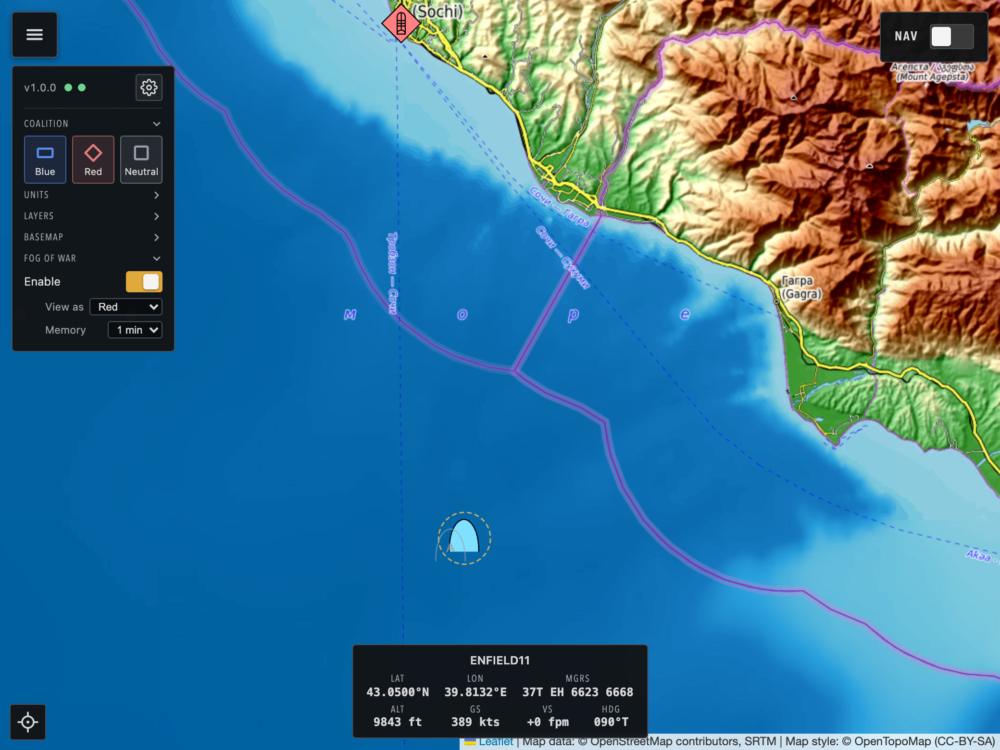
Movement vectors & trails
Every moving unit carries a short fixed-length direction-vector stub — a heading arrow you read at a glance — and a fading motion trail behind it. Set the trail from 15 seconds to 5 minutes, so a fast-mover's recent track (here, a pair of Hornets in a racetrack orbit) reads instantly: where it's going, and where it's been.
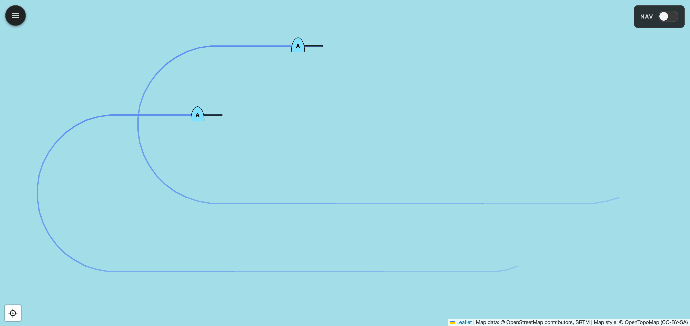
- Selectable basemap. Topographic, street, or satellite imagery — switch live; the choice rides the URL.
- Cursor coordinate readout. Live MGRS and lat/long under the pointer, always a tap away in the measure panel.
- In-app settings. A built-in panel points MizMap at DCS and DCS-gRPC and sets the web port and LAN bind address — no config files to hand-edit.
- Local tile cache. Works offline once warm. No more tile-server rate-limit surprises.
- LAN-friendly. Open the viewer from any browser on the same network — phone, tablet, second PC.
- Responsive kneeboard layout. On a tablet or phone the panels collapse and the map fills the screen.
// Install
-
Install DCS-gRPC rust-server
Drop the Hooks DLL into your DCS install and enable
evalEnabled = trueinSaved Games/DCS/Config/dcs-grpc.lua. Project page ↗ -
Grab the installer
Download
mizmap-setup-<version>.exefrom the latest GitHub release and run it. MizMap installs per-user under%LOCALAPPDATA%\Programs\MizMap\— no admin needed.The installer is unsigned, so SmartScreen shows an "unknown publisher" warning the first time. Click More info → Run anyway.
-
Launch MizMap
Start MizMap from the Start menu. A tray icon appears and the viewer opens in your default browser. Load any single-player mission in DCS and units start streaming.
-
Open from anywhere on the LAN
Point any browser on the same Wi-Fi at
http://<dcs-pc-ip>:8766. Bring a tablet to the cockpit; keep a second monitor as a kneeboard.
Prefer to run from source?
uv sync, ./scripts/regen_protos.sh,
uv run mizmap serve. Full instructions in the
README.
// Architecture
DCS-gRPC streams unit and event data over a local socket. A small Python backend (FastAPI + async gRPC) maintains the in-memory mission state and fans it out to browsers over a WebSocket. The viewer is vanilla JS + Leaflet with MIL-STD-2525C symbology — no build step.
DCS World (Windows)
│
├── DCS-gRPC rust-server (Hooks DLL) ── gRPC :50051
│
▼
MizMap backend (Python, FastAPI)
├── async gRPC client → unit/event streams
├── in-memory mission state
├── HTTP/WebSocket server (default :8766)
└── serves the web viewer
│
▼
MizMap viewer (browser, Leaflet + MIL-STD-2525 symbology)
on the DCS PC and/or a LAN tablet